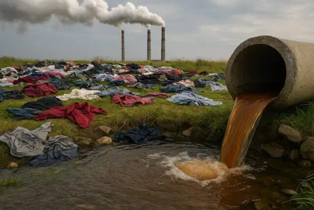

Fast fashion — the rapid production of inexpensive, trend-driven clothing — drives a linear "take-make-dispose" model with severe environmental consequences.1
Canadians purchase an estimated 70 garments per person annually, yet the average item is worn only 7–10 times.2,3
The fashion industry accounts for 8–10% of global carbon emissions — more than international flights and shipping combined.5
01 The Fast Fashion Lifecycle
🌿
Raw Materials
▸
🏭
Manufacturing
▸
🚢
Transport
▸
🛍️
Consumer Use
▸
🗑️
Disposal
02 Key Statistics
🗑️
12 kg
Textile waste per Canadian per year
(ECCC, 2023)1
💧
2,700 L
Water to produce one cotton T-shirt
(EMF, 2017)3
🔥
1.2 Gt
CO₂ from global fashion industry/yr
(UNEP, 2023)4
♻️
<1%
Clothing recycled into new garments
(EMF, 2017)3
03 Data Visualizations
Figure 1 · Textile Waste by Province (kilotonnes/yr)
>100 kt
30–100 kt
10–30 kt
<10 kt
Figure 1. Estimated annual textile waste by province, population-weighted. Ontario and Quebec generate the most due to higher populations.1,2
Figure 2 · Fashion GHG Emissions by Stage
Figure 2. Data: IPCC (2022); Ellen MacArthur Foundation (2017)3,5
04 Environmental Impacts in Canada

The True Cost of Cheap Clothes
🔥
Carbon Emissions
Fashion produces ~1.2 Gt CO₂/yr globally. Synthetic fibres from fossil fuels generate emissions during production and incineration.4,5
💧
Water Pollution
Fashion consumes ~93 billion m³ of water/yr. Textile dyeing is the 2nd-largest water polluter, introducing heavy metals into freshwater.3,4
🗑️
Landfill & Waste
Canadians send ~12 kg of textile waste per person to landfills annually. Synthetics take 20–200 years to decompose.1,2
🌿
Biodiversity Loss
Cotton uses 6% of global pesticides and 16% of insecticides. Fibre crop expansion drives deforestation globally.4,5
Action
Solutions: How You Can Help
👗
Buy Less, Choose Well
Invest in durable garments — reducing purchases by 30% could cut emissions equal to removing 1M cars.3
🔄
Thrift & Swap
Shop second-hand or organize clothing swaps to extend garment lifespans.2
♻️
Recycle & Donate
Use textile recycling programs — many Canadian cities offer curbside collection.1
🧊
Wash Mindfully
Cold water and microfibre bags reduce microplastic release by up to 80%.3
📋
Advocate for Policy
Support extended producer responsibility (EPR) under Canada's Zero Plastic Waste strategy.1
🌱
Sustainable Fabrics
Choose organic cotton, TENCEL™, or recycled fibres with GOTS/OEKO-TEX certification.4